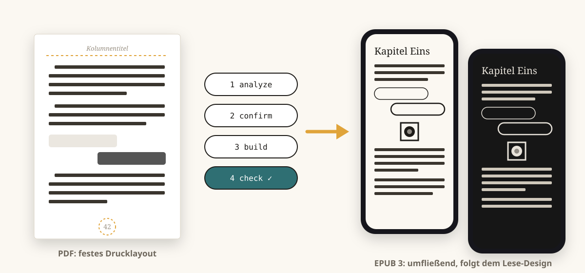
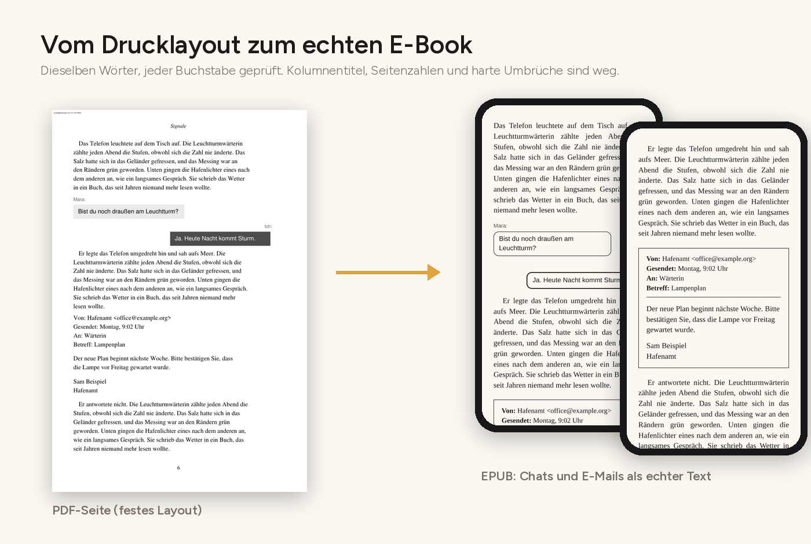
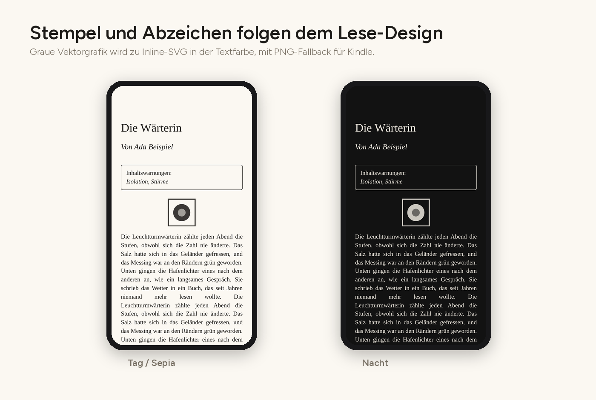
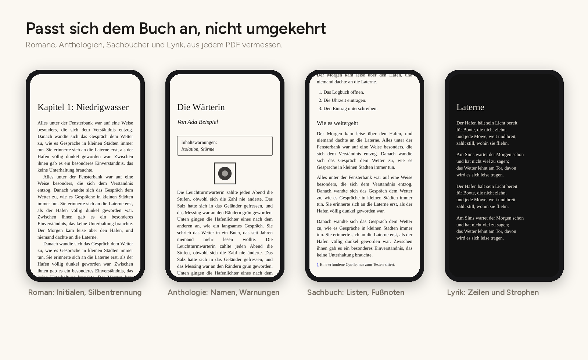
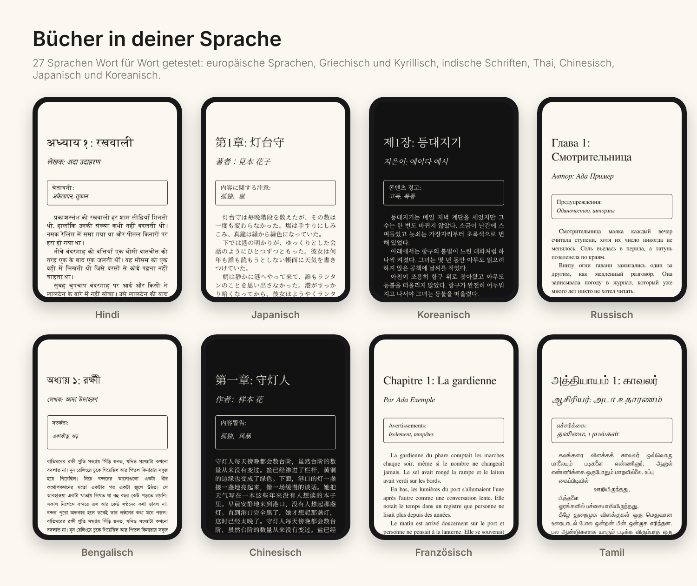
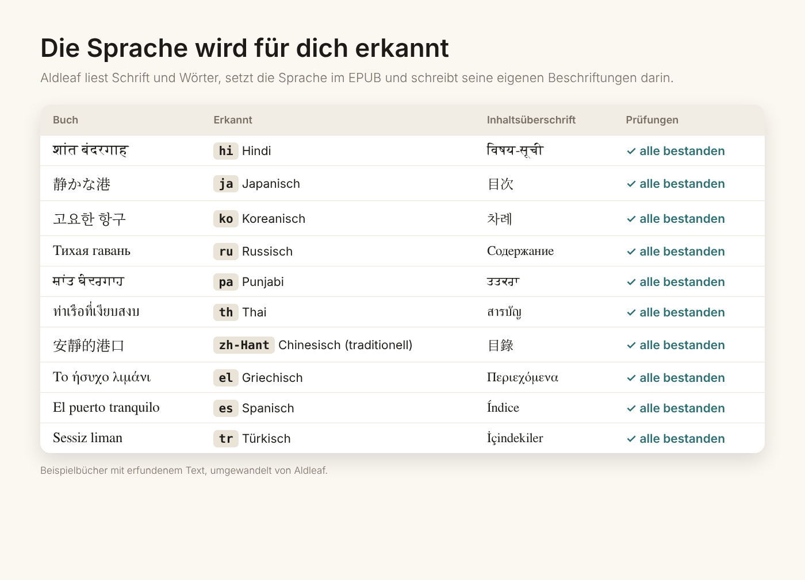

Aldleaf · PDF zu EPUB, aber richtig
Jedes gedruckte Blatt, neu geschrieben als EPUB.
Für Autorinnen, Autoren und Verlage im Selfpublishing. Aldleaf ist ein kostenloser Open-Source-Konverter von PDF zu EPUB. Er liest das Layout deines textbasierten PDF-Buchs und erstellt ein sauberes, geprüftes EPUB 3, das du auf jeder Plattform deiner Wahl veröffentlichen kannst. Er erkennt, wofür jede Schrift verwendet wird, findet die Kapitel, liest die Seitenzahlen und prüft dann jeden Buchstaben gegen das PDF. Du schreibst in Word oder einem anderen Programm? Exportiere zuerst deine fertige, druckreife Fassung als PDF.
 REAL Rating 3 · moderate KI
REAL Rating 3 · moderate KIKI hat Bausteine unter Leitung des Autors beigetragen

Für wen
Für alle im Selfpublishing, die ein druckreifes PDF haben, aber noch kein richtiges E-Book.
Selfpublisher
Du hast dein Buch für den Druck gesetzt (InDesign, Affinity, Word, Vellum, Scribus, LaTeX) und willst ein E-Book, ohne für die Umwandlung zu bezahlen oder alles neu abzutippen.
Kleine und unabhängige Verlage
Mach aus Backlist und neuen Druckdateien einheitliche, barrierearme EPUBs.
Anthologien und Wettbewerbe
Sammelbände mit vielen Autorinnen und Autoren, Namenszeilen, Widmungen und Inhaltswarnungen.
Leserinnen und Leser können es auch für ihr eigenes DRM-freies Exemplar eines Buchs auf ihren eigenen Geräten nutzen. Es ist nicht dafür gedacht, Bücher umzuwandeln oder weiterzugeben, an denen du keine Rechte hast.
So funktioniert es
Ein-Klick-Konverter machen aus einem PDF einfach Textzeilen. Aldleaf vermisst es, zeigt dir, was es gefunden hat, und erstellt das E-Book erst, wenn du zustimmst.
Analysieren
Misst Abstände, Einzüge und Ränder, bestimmt die Rolle jeder Schrift@Größe und findet Abschnitte, Namenszeilen und Seitenzahlen.
Bestätigen
Alles landet in einer lesbaren Konfigurationsdatei. Korrigiere eine Rolle, einen Titel oder die Sprache; nichts ist im Code versteckt.
Erstellen
Semantisches XHTML, EPUB-3-Navigation, Seitenliste, NCX-Fallback, Metadaten zur Barrierefreiheit, Cover und optionale Schriften.
Prüfen
EPUBCheck, jeder Buchstabe jedes Abschnitts mit dem PDF verglichen, Abdeckung der Seitenmarken, Lints und Screenshots im direkten Vergleich.
Vom Drucklayout zum echten E-Book
Kolumnentitel, Seitenzahlen und harte Zeilenumbrüche werden anhand ihrer Position entfernt. Über Seiten getrennte Absätze werden wieder zusammengefügt. Chats, E-Mails und Bildschirmtexte werden zu echtem, gekennzeichnetem Text.

Stempel und Abzeichen folgen dem Lese-Design
Graue Vektorgrafiken wie Bewertungsstempel, Logos und Ornamente werden zu Inline-SVGs in der Textfarbe des Readers. Sie bleiben scharf, haben keinen weißen Kasten und werden im Nachtmodus hell. Kindle erhält ein transparentes PNG als Fallback. Farbige Grafiken bleiben Bilder.
art: png in der Konfiguration, um alle Grafiken als Bilder zu behalten.
Passt sich dem Buch an, nicht umgekehrt
Nichts ist auf einen einzelnen Titel zugeschnitten. Das Profil wird aus jedem PDF gemessen und in die Konfiguration geschrieben.

Romane
Erstzeileneinzug oder Absätze mit Abstand, Blocksatz oder Flattersatz, Initialen, Überschriften aus „Kapitel 1“ und Titel. Trennstriche aus dem Satz werden entfernt, echte Bindestriche bleiben.
Anthologien
Namenszeilen, Widmungen und Inhaltswarnungen pro Geschichte. Die Autorinnen und Autoren erscheinen als Mitwirkende in den Metadaten.
Sachbücher
Zwischenüberschriften, Aufzählungen und nummerierte Listen, Fußnoten als Pop-up-Anmerkungen mit Links in beide Richtungen.
Lyrik
Jeder Zeilenumbruch und jede Strophe bleibt wie gesetzt.
Szenenwechsel, wie gesetzt
Das gedruckte Zeichen des Autors oder eine Leerzeile, nie durch eine Regel hinzugefügt oder entfernt. Lieber überall dasselbe Ornament? scene_breaks: ornament.
Seitenzahlen der Druckausgabe
Jede Seite bekommt eine Marke, auch unnummerierte Kapitelanfänge. Apple Books zeigt die gedruckten Seitenzahlen, damit Lesende sie zitieren können.
Bücher in deiner Sprache
Jede Sprache, die waagerecht von links nach rechts geschrieben wird. Aldleaf übersetzt deinen Text nie. Es erkennt die Sprache und setzt sie im EPUB, erkennt Kapitelbezeichnungen, Namenszeilen und Inhaltswarnungen in dieser Sprache und schreibt auch seine eigenen Beschriftungen darin.

Die Sprache wird für dich erkannt
Aus dem PDF, der Schrift und den Wörtern. Reader, Shops und Screenreader brauchen sie für die richtigen Schriften, die Silbentrennung und die Aussprache. Zeilen auf Chinesisch, Japanisch und Thai werden ohne zusätzliche Leerzeichen verbunden, und eine beschädigte Textebene im PDF wird, wo es sicher ist, repariert oder sonst gemeldet. 27 Sprachen Wort für Wort getestet (Englisch), jeweils als Anthologie, Roman, Sachbuch und Lyrik.

Es prüft seine eigene Arbeit
Jeder Durchlauf schreibt einen Prüfbericht. Er vergleicht Buchstaben statt Wörter, damit Initialen und entfernte Trennstriche keine fehlende Zeile verstecken.
| Prüfung | Was sie findet |
|---|---|
| EPUBCheck | Alles, was Apple Books oder Send to Kindle ablehnen würden |
| Vollständigkeit | Verlorener oder doppelter Text, pro Abschnitt |
| Seitenmarken | Druckseiten ohne Marke |
| Lints | Übrig gebliebene Seitenzahlen, nicht verbundene Zeilenumbrüche, fehlende Absatzwechsel |
--reference | Strukturelle Unterschiede zu einer handgemachten Ausgabe (ohne Textvergleich) |
--visual | PDF- und EPUB-Screenshots im direkten Vergleich |

Installieren und loslegen
Starte mit einem PDF. Aldleaf liest vorerst nur PDF-Dateien. Liegt dein Buch in Word, Pages, Google Docs, Scrivener oder einem anderen Programm vor, exportiere zuerst deine fertige, lektorierte, druckreife Fassung als PDF (zum Beispiel Datei → Speichern unter → PDF) und wandle dann dieses PDF um.
Python 3.10+. EPUBCheck benötigt Java.
pip install git+https://github.com/5aahil/aldleaf-pdf2epub aldleaf fetch-epubcheck aldleaf analyze book.pdf # schreibt book.aldleaf.yaml: prüfen aldleaf build book.pdf # book.epub + book_QA.txt # oder beides auf einmal: aldleaf convert book.pdf --cover cover.jpg
Öffne das EPUB dann in Apple Books oder lade es bei Send to Kindle hoch. Die Konfigurationsreferenz (Englisch) erklärt jede Option.
Funktioniert mit Claude
Der passende Claude-Skill aldleaf (Kurznamen: pdf2epub und pdf-to-epub) führt dich durch den ganzen Ablauf. Er analysiert das PDF, prüft die vorgeschlagene Konfiguration an gerenderten Seiten, erstellt und prüft das EPUB und übergibt das Ergebnis mit einer Checkliste für deine Geräte.
Claude Code:
/plugin marketplace add 5aahil/aldleaf-pdf2epub /plugin install aldleaf@aldleaf # dann /aldleaf:aldleaf, /aldleaf:pdf2epub oder /aldleaf:pdf-to-epub ausführen
Claude-App: Lade aldleaf-skill.zip herunter und gehe zu Customize → Skills → + → Upload a skill. Die Codeausführung muss aktiviert sein. Lies den Skill vorher.
Rechte und Datenschutz
Für Autorinnen, Autoren und Verlage, die ihre eigenen Bücher umwandeln, und für Lesende, die ihr eigenes Exemplar für ihre eigenen Geräte umwandeln. Kopiergeschützte PDFs werden abgelehnt. Käuferstempel werden weggelassen, außer du gibst --stamp an. PDFs, EPUBs und Konfigurationen werden nie ins Repository übernommen: Die CI erzwingt das. Aldleaf sammelt keine Daten: keine Konten, keine Analyse, kein Server. Lies die Datenschutzerklärung (Englisch).
(Noch) nicht unterstützt
Word-, Pages- und andere Programmdateien (zuerst als PDF exportieren), gescannte PDFs ohne Textebene (werden erkannt und abgelehnt), mehrspaltiger Fließtext, große Tabellen und Formeln, Schriften von rechts nach links (Arabisch, Hebräisch, Persisch, Urdu) und senkrechter chinesischer oder japanischer Text (beides wird erkannt und mit einer klaren Meldung abgelehnt und ist als Nächstes geplant).
KI-Offenlegung
REAL Rating 3 (moderate KI), selbst eingestuft auf der REAL-Rating-Skala von Real Good AI. KI hat unter Leitung des Autors Bausteine beigetragen (Code, Dokumentation und Illustrationen). Der Autor hat die Anforderungen und das Design festgelegt, das Toolkit an echten Büchern getestet, Fehler gemeldet und die Korrekturen geprüft und alle Entscheidungen getroffen.